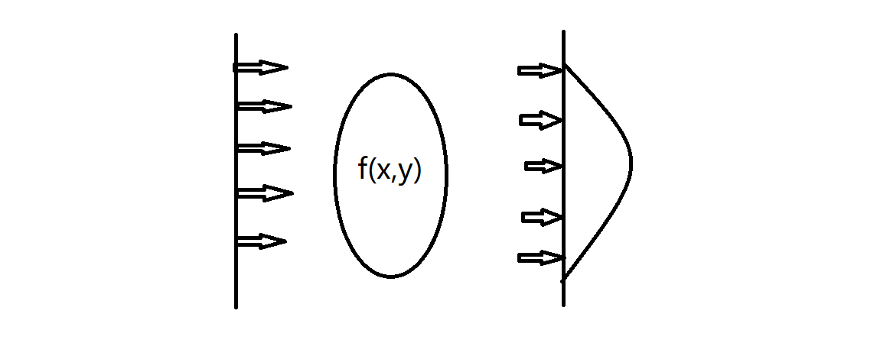

CT 基本原理手记
X射线在穿过不同的物质时，会有不同的衰减速率。假设某种物质的X射线衰减因子是μ，那么X射线的强度在穿过该物质的前后关系为： \[\
I=I_{0} e^{-\mu L}\
\]
其中，\(I_0\)为入射的\(X\)射线的强度，\(I\)为出射的\(X\)射线强度，\(L\)为\(X\)射线穿过该物质的长度。
X射线可以得到物体的二维平面信息，CT的成像原理是，在得到多个角度的二维图像信息后，通过合适的算法即可得到物体的三维信息。
将物体抽象为一个2*2的矩阵，从各个角度对其投影
！图
上图可以清晰简单的看到得到的投影结果。对其作逆投影，即将得到的投影信息在对应方向上相加
！图
然后，可以通过以下的计算得到矩阵的内部信息
\[\
\left(\
\left(\
\begin{array}{cc}\
32 & 23 \\
26 & 38 \\
\end{array}\
\right)\
-(10+7)\
\right)\
/\
\left(4-1\right)\
=\left(\
\begin{array}{cc}\
5 & 2 \\
3 & 7 \\
\end{array}\
\right)\
\]
Radon变换

如图所示，假设物体上每一点对射线的衰减程度为函数\(f(x,y)\)，相当于在每一个方向上，都可以得到物体在此方向上的”厚度”。根据所得到的数据，即可求出物体在每一点上的衰减程度。
求”厚度”可以在数学上表述为一种线积分，当直线\(L\)穿过\(f(x,y)\)，在连续状态下，所对应的强度就是函数\(f(x,y)\)在直线L上的线积分：
\[\
g_{L}=\int_{L} f(x, y) \mathrm{d} s\
\]
线L的方程为
\[\
y=kx+b\
\]
假设线L与y轴的夹角为theta，直线L也可以表示为
\[\
xcos{\theta}+ysin{\theta}=\rho, \quad \quad \rho=bsin{\theta}\
\]
于是：
\[\
g(\rho, \theta)=\int_{-\infty}^{\infty}
\int_{-\infty}^{\infty} f(x, y) \delta(x \cos \theta+y \sin
\theta-\rho) d x d y\
\]
其中\(\delta\)是冲激函数。除非\(\delta\)的参量为0，否则上式的右边为零，它指出积分只沿着\(xcos{\theta}+ysin{\theta}=\rho\)计算。
在离散状态下，上式变为
\[\
g(\rho, \theta)=\sum_{x=0}^{M-1} \sum_{y=0}^{N-1} f(x, y)
\delta(x \cos \theta+y \sin \theta-\rho)\
\]
沿xy平面任意一条直线的线积分的公式，称之为Radon变换。Radon变换\(g(\rho,\theta)\)以\(\rho,\theta\)作为直线坐标显示为一幅图像时，结果称之为正弦图。下图为一个矩形的正弦图
从投影得到三维信息
从投影中得到三维信息，其过程是反投影每一个投影，然后对反投影求和产生一幅图像。堆积所有的结果图像得到物体的三维信息。
对于一个固定旋转值的投影，可以得到如下表达式：
\[\
f*{\theta_{k}}(x, y)=g\left(\rho, \theta_{k}\right)=g\left(x
\cos \theta_{k}+y \sin \theta_{k}, \theta_{k}\right)\
\]
显然，这一公式对于任意值均成立，更一般地，
\[\
f*{\theta}(x, y)=g(x \cos \theta+y \sin \theta, \theta)\
\]
通过对所有反投影得到的图像积分，得到最终结果：
\[\
f(x, y)=\int_{0}^{\pi} f_{\theta}(x, y) \mathrm{d} \theta\
\]
离散状态下，上式为：
\[\
f(x, y)=\sum_{\theta=0}^{\pi} f_{\theta}(x, y)\
\]
!图